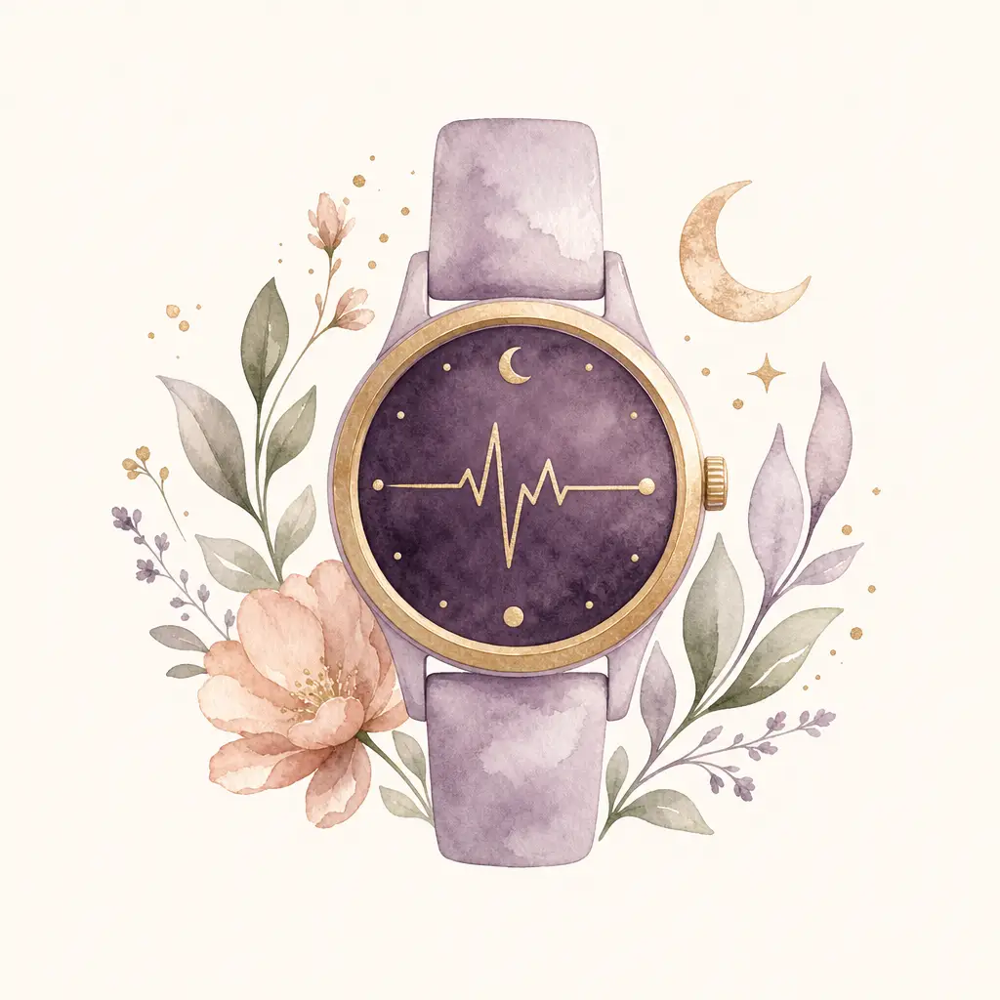

Technology · 3 minute guide
Wearables & your health data
The source, the measurement and your permission all matter.
What is available here?
This web version does not import Apple Health, Health Connect, Oura or WHOOP records. Your saved lab entries and wellness journal are available on this browser. The camera check is a separate experimental session.
How a connection should work
- A device records an observation
The device and its software determine what is measured.
- You choose what to share
The health platform or provider asks for specific permissions.
- An app shows the source and date
A useful display preserves the metric, unit and recording context.
Available records depend on the source and your permissions. Missing data should remain missing, rather than become a zero or invented trend.
Different routes into an app
Apple Health
HealthKit lets an iPhone app request access to individual health-data types. It requires an implemented native connection and your permission.
Android Health Connect
An Android app requests permission for each data type it needs. You can grant or revoke that access.
Oura, WHOOP & Google Health API
These providers document separate account-based connections. Authorization is required; an available API does not mean Ovuluna is already connected.
Oura authorization · WHOOP authorization · Google Health API
“HRV” is not one universal number
Apple HealthKit’s HRV type records the standard deviation of normal heartbeat intervals.
Health Connect has a type for the root mean square of successive normal heartbeat-interval differences.
Both can be expressed in milliseconds. That does not make them the same calculation. Keep different metrics and recording methods in separate series.
Before comparing a trend
- Check the original device and the metric name.
- Check when, and for how long, it was recorded.
- Look for missing or rejected recordings.
- Keep a camera PRV session separate from a wearable’s overnight summary.
Combining sources does not by itself validate an ovarian-age estimate or confirm ovulation.
Sources checked 11 September 2026. Provider documentation describes connection capabilities, not a completed Ovuluna integration.